Лабораторная работа №2
Цель работы
Цель работы - познакомиться с Django, научиться создавать модели, формы и страницы, а затем написать сайт по своему варианту. Мой вариант - табло победителей автогонок. Для хранения данных я использовал PostgreSQL.
Сначала я выполнил практические задания в одном проекте практических работ. Затем создал отдельный сайт автогонок. Для каждого проекта настроил свою базу данных, чтобы автомобили и владельцы не смешивались с участниками гонок.
Практическое занятие 2.1
Практическое задание 1. Создание проекта
По заданию нужно установить Django, создать проект и приложение с указанными именами.
Сначала я установил Django и создал проект практических работ и приложение.
Для работы используется Python 3.12 и Django 5.2. В каталоге students/k3340/Shitarev_Andrey/practical_works/simple_django_web_project находятся manage.py, папка django_project_shitarev с общими настройками и приложение project_first_app. Для шаблонов и подключения к базе используются Jinja2 и драйвер psycopg.
Проект содержит настройки сайта, а приложение содержит его модели и страницы. Запрос из браузера сначала попадает в urls.py. Этот файл выбирает представление в views.py. Представление получает данные через модели и передает их шаблону. Шаблон формирует HTML, который возвращается в браузер.
Файл manage.py нужен для запуска команд Django. С его помощью можно создать миграции, запустить сервер или выполнить проверки. Папка проекта содержит settings.py и главный urls.py. Код моделей и страниц находится внутри приложения.
Затем в settings.py я подключил приложение, PostgreSQL и два движка шаблонов. Django Templates нужен панели администратора, а собственные страницы работают через Jinja2. Для базы указал имя web_practice_shitarev, пользователя web_lab_user и локальный сервер PostgreSQL.
Настройки проекта записаны в файле settings.py:
В списке INSTALLED_APPS я подключил приложение. Django использует этот список при запуске:
INSTALLED_APPS = [
'django.contrib.admin', 'django.contrib.auth', 'django.contrib.contenttypes',
'django.contrib.sessions', 'django.contrib.messages', 'django.contrib.staticfiles',
'project_first_app',
]
В настройке DATABASES я указал PostgreSQL и параметры подключения. В TEMPLATES подключил два способа обработки шаблонов: стандартный для Admin и Jinja2 для страниц.
Здесь INSTALLED_APPS перечисляет подключенные приложения. DATABASES сообщает Django, к какой базе подключаться. TEMPLATES содержит настройки двух движков. Строка AUTH_USER_MODEL заранее указывает собственную модель пользователя: это важно, потому что в практике 2.3 владельца необходимо сделать пользователем. Если менять модель пользователя после первых миграций, придется отдельно решать проблему уже созданных связей в базе.
Практическое задание 2.1. Модель автовладельцев
По заданию нужно создать модель данных об автовладельцах по схеме из методички.
На схеме показаны модели владельца, автомобиля, владения и удостоверения и связи между ними:
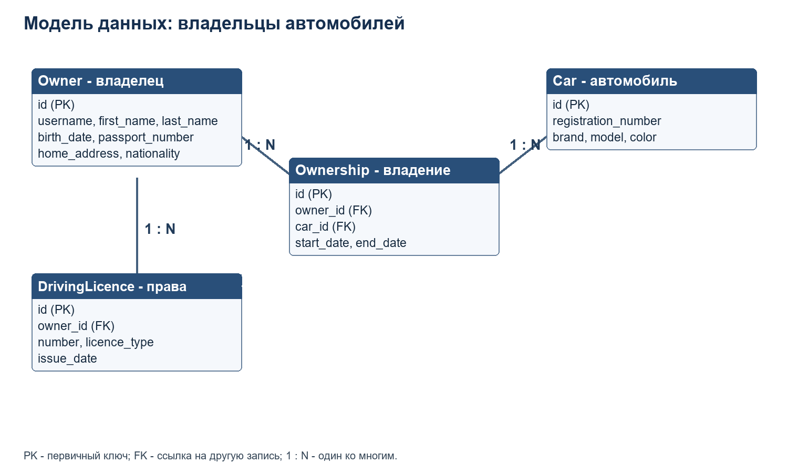
PK - номер записи, FK - ссылка на другую запись. Обозначение 1 : N означает, что одной записи может соответствовать несколько связанных записей.
Сначала я описал в project_first_app/models.py владельца, автомобиль, владение автомобилем и водительское удостоверение.
Модель в Django - описание данных на Python. После создания миграций Django использует это описание, чтобы подготовить таблицы в PostgreSQL. Владелец наследуется от AbstractUser, поэтому кроме дополнительных полей получает возможности обычного пользователя Django. Автомобиль связан с владельцами через модель владения: в ней можно хранить даты начала и окончания. Благодаря этому одна и та же машина может принадлежать разным людям в разные периоды.
Код моделей:
Сначала я подключил необходимые части Django и модели:
from django.contrib.auth.models import AbstractUser
from django.db import models
Модель Owner описывает владельца и его данные.
class Owner(AbstractUser):
first_name = models.CharField(max_length=30)
last_name = models.CharField(max_length=30)
birth_date = models.DateTimeField(null=True, blank=True)
passport_number = models.CharField(max_length=30, blank=True)
home_address = models.CharField(max_length=200, blank=True)
nationality = models.CharField(max_length=100, blank=True)
Модель Car хранит сведения об автомобиле.
class Car(models.Model):
registration_number = models.CharField(max_length=15)
brand = models.CharField(max_length=20)
model = models.CharField(max_length=20)
color = models.CharField(max_length=30, null=True, blank=True)
owners = models.ManyToManyField(Owner, through='Ownership')
def __str__(self):
return f'{self.brand} {self.model} ({self.registration_number})'
Модель Ownership связывает владельца и автомобиль и хранит даты владения.
class Ownership(models.Model):
owner = models.ForeignKey(Owner, on_delete=models.CASCADE)
car = models.ForeignKey(Car, on_delete=models.CASCADE)
start_date = models.DateTimeField(null=True, blank=True)
end_date = models.DateTimeField(null=True, blank=True)
Модель DrivingLicence хранит данные водительского удостоверения.
class DrivingLicence(models.Model):
TYPES = [('A', 'A'), ('B', 'B'), ('C', 'C'), ('D', 'D'), ('E', 'E')]
owner = models.ForeignKey(Owner, on_delete=models.CASCADE)
number = models.CharField(max_length=10)
licence_type = models.CharField(max_length=10, choices=TYPES)
issue_date = models.DateTimeField()
ForeignKey обозначает ссылку на другую запись. Например, удостоверение связано с конкретным владельцем. Поле ManyToManyField показывает, что у владельца может быть несколько автомобилей, а автомобиль может иметь нескольких владельцев. Параметр through указывает на отдельную модель, в которой лежат данные о периоде владения. Для категории удостоверения задан выбор значений A-E.
Практическое задание 2.2. Миграции
По заданию нужно создать миграции и применить их к базе данных.
Миграция - это файл с инструкциями для изменения структуры базы данных. Сначала Django сравнивает модели с предыдущим состоянием и записывает необходимые изменения в файл. Затем он выполняет эти инструкции и создает или изменяет таблицы. Сами модели описываются в Python, а данные хранятся в PostgreSQL.
После создания моделей я выполнил две команды:
python manage.py makemigrations
python manage.py migrate
Первая команда создает файлы в migrations/, вторая выполняет их в PostgreSQL. В проекте практических работ применены начальная миграция, изменение полей имени и фамилии и изменение поля категории удостоверения. Файл __init__.py сообщает Python, что каталог является пакетом.
Затем я посмотрел состояние миграций. Отметка [X] показывает, что они применены.
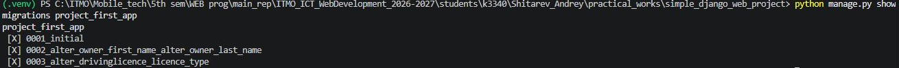
После этого я посмотрел созданные таблицы в PostgreSQL с помощью psql:
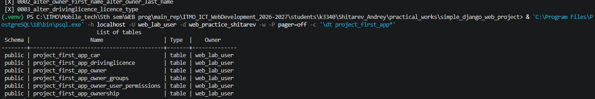
Практическое задание 3. Панель администратора и данные
По заданию нужно зарегистрировать модели в панели администратора, создать суперпользователя и добавить владельцев и автомобили. Каждого владельца нужно связать минимум с тремя автомобилями, указав непересекающиеся даты владения.
Сначала я зарегистрировал модели в admin.py. Для пользователя добавил отображение даты рождения, паспорта, адреса и национальности:
from django.contrib import admin
from django.contrib.auth.admin import UserAdmin
from .models import Owner, Car, Ownership, DrivingLicence
@admin.register(Owner)
class OwnerAdmin(UserAdmin):
fieldsets = UserAdmin.fieldsets + (('Данные владельца', {'fields': ('birth_date', 'passport_number', 'home_address', 'nationality')}),)
admin.site.register([Car, Ownership, DrivingLicence])
Для данных создана команда management/commands/practice_data.py. В ней добавляются два владельца и четыре автомобиля. Первые три автомобиля последовательно связываются с обоими владельцами: сначала один владеет автомобилем с 2018 по 2020 год, затем второй с 2021 по 2023 год. Таким образом у каждого владельца есть три автомобиля, а периоды в подготовленных данных не пересекаются.
Код команды:
Команда получает или создает записи владельцев и автомобилей, а затем связывает их с помощью модели Ownership. Для каждого владения указываются даты начала и окончания.
Затем я создал суперпользователя и открыл панель администратора проекта практических работ:
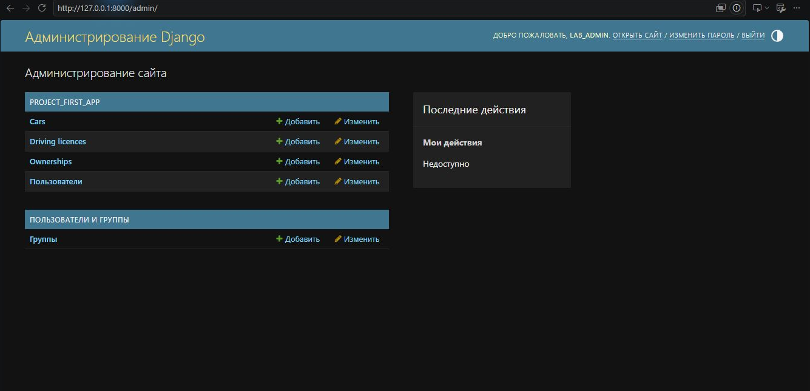
Практическое задание 4. Страница владельца
По заданию нужно получить владельца из базы по ID и показать его данные на странице.
Я создал файл views.py. В нем находятся представления - функции или классы, которые получают запрос от браузера и решают, что показать пользователю.
В этом файле я написал функцию owner_detail:
def owner_detail(request, owner_id):
owner = get_object_or_404(Owner, pk=owner_id)
return render(request, 'owner.html', {'owner': owner}, using='jinja2')
Когда пользователь открывает адрес страницы, функция получает запрос request и номер владельца owner_id. Затем get_object_or_404 ищет запись в базе. Если записи нет, Django показывает страницу 404. Если запись найдена, render передает ее в шаблон owner.html. Шаблон подставляет данные в HTML и готовая страница возвращается в браузер. Для обработки шаблона выбран Jinja2.
После этого я создал owner.html, подключил адрес и открыл страницу в браузере.
Так выглядит страница владельца, полученная по его идентификатору:
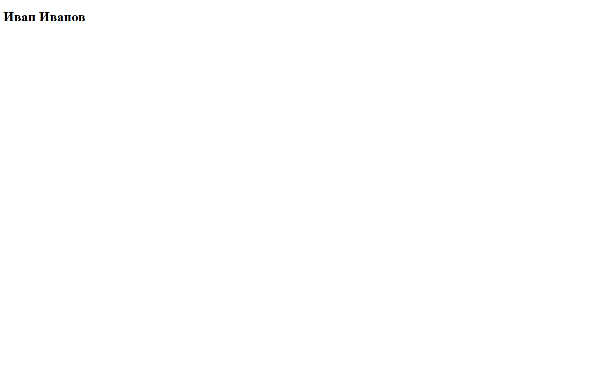
Практическое задание 5. Адрес страницы
По заданию нужно создать адрес страницы владельца и подключить адреса приложения к проекту.
Сначала я записал адреса в project_first_app/urls.py. Затем подключил их в главном файле адресов через include. Например, /owner/1 открывает страницу первого владельца. Код маршрутов приложения:
from django.urls import path
from . import views
urlpatterns = [
path('owner/<int:owner_id>', views.owner_detail, name='owner_detail'),
path('owners/', views.owner_list, name='owner_list'),
path('owners/new/', views.owner_create, name='owner_create'),
path('cars/', views.CarList.as_view(), name='car_list'),
path('cars/new/', views.CarCreate.as_view(), name='car_create'),
path('cars/<int:pk>/', views.CarDetail.as_view(), name='car_detail'),
path('cars/<int:pk>/edit/', views.CarUpdate.as_view(), name='car_update'),
path('cars/<int:pk>/delete/', views.CarDelete.as_view(), name='car_delete'),
]
Шаблон owner.html находится в каталоге jinja2/. В нем переменные в двойных фигурных скобках заменяются значениями полей владельца. Через параметр using='jinja2' представление явно выбирает нужный движок.
Практическое занятие 2.2
Для этой практики я продолжил работу над тем же проектом. Связь между владельцами и автомобилями уже описана в Ownership. Далее я добавил страницы и формы.
Практическое задание 1. Связи
По заданию нужно связать владельцев и автомобили через отдельную модель, в которой будут храниться даты начала и окончания владения.
Сначала я создал модель Ownership и добавил в нее ссылки на владельца и автомобиль, а также даты владения.
У каждого владения есть ссылка на владельца и ссылка на автомобиль. Это позволяет записать несколько периодов для одной машины. В подготовленных данных конец предыдущего периода раньше начала следующего. Общая проверка пересечений при произвольном вводе через Admin пока не добавлена.
В таблице владения видны владельцы, автомобили и даты их владения:
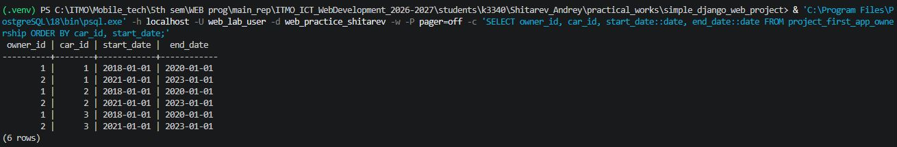
Практическое задание 2. Представления
По заданию нужно вывести список владельцев с помощью функции, а список автомобилей, отдельный автомобиль и его изменение сделать с помощью классов. Также нужно добавить минимум трех владельцев и три автомобиля.
Сначала я написал функцию для списка владельцев. Затем добавил классы для списка автомобилей, страницы автомобиля и его изменения. Классы для создания и удаления автомобиля понадобятся в следующем задании. Ниже код представлений:
Сначала я подключил необходимые части Django и модели:
from django.shortcuts import get_object_or_404, redirect, render
from django.urls import reverse_lazy
from django.views.generic import ListView, DetailView, CreateView, UpdateView, DeleteView
from .forms import OwnerForm, CarForm
from .models import Owner, Car
Это представление находит владельца по номеру и передает его в шаблон.
def owner_detail(request, owner_id):
owner = get_object_or_404(Owner, pk=owner_id)
return render(request, 'owner.html', {'owner': owner}, using='jinja2')
Эта функция получает список владельцев и передает его на страницу.
def owner_list(request):
return render(request, 'owners.html', {'owners': Owner.objects.all()}, using='jinja2')
Эта функция показывает форму владельца и сохраняет заполненные данные.
def owner_create(request):
form = OwnerForm(request.POST or None)
if request.method == 'POST' and form.is_valid():
form.save()
return redirect('owner_list')
return render(request, 'form.html', {'form': form}, using='jinja2')
Этот класс получает список автомобилей.
class CarList(ListView):
model = Car
template_name = 'cars.html'
template_engine = 'jinja2'
Этот класс получает один автомобиль по его номеру.
class CarDetail(DetailView):
model = Car
template_name = 'car.html'
template_engine = 'jinja2'
Этот класс показывает форму и создает автомобиль.
class CarCreate(CreateView):
model = Car
form_class = CarForm
template_name = 'form.html'
template_engine = 'jinja2'
success_url = reverse_lazy('car_list')
Этот класс показывает форму с данными автомобиля и сохраняет изменения.
class CarUpdate(UpdateView):
model = Car
form_class = CarForm
template_name = 'form.html'
template_engine = 'jinja2'
success_url = reverse_lazy('car_list')
Этот класс показывает подтверждение и удаляет автомобиль.
class CarDelete(DeleteView):
model = Car
template_name = 'car_delete.html'
template_engine = 'jinja2'
success_url = reverse_lazy('car_list')
get_object_or_404 получает запись из базы или сообщает, что она не найдена. Классы ListView, DetailView, CreateView, UpdateView и DeleteView выполняют типовые действия. Для них указаны имена шаблонов и движок jinja2. В шаблонах owners.html, cars.html и car.html выводятся полученные данные.
Так выглядят списки владельцев и автомобилей:
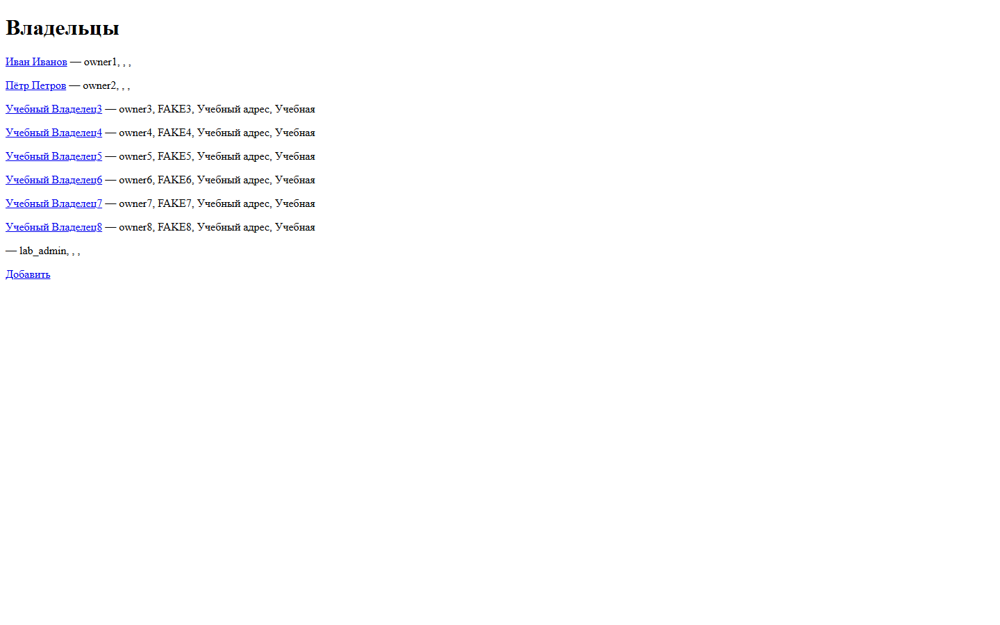
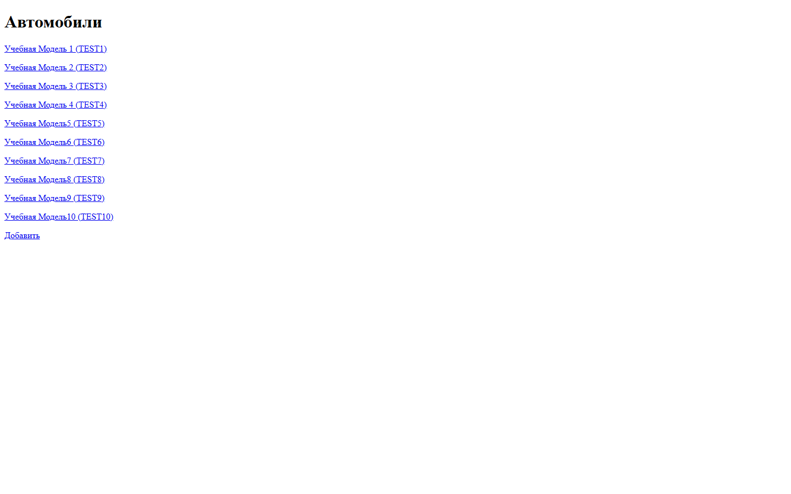
Страница отдельного автомобиля:
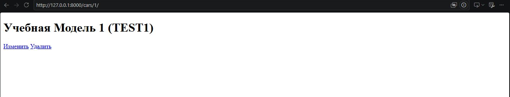
Практическое задание 3. Формы
По заданию нужно сделать форму добавления владельца с помощью функции. Для создания, изменения и удаления автомобиля нужно использовать классы. Через формы нужно добавить еще минимум трех владельцев и три автомобиля.
Сначала я создал формы в forms.py. Для владельца использовал функцию, а для автомобиля - классовые представления:
from django import forms
from django.contrib.auth.forms import UserCreationForm
from .models import Owner, Car
class OwnerForm(UserCreationForm):
class Meta:
model = Owner
fields = ('username', 'first_name', 'last_name', 'birth_date', 'passport_number', 'home_address', 'nationality')
class CarForm(forms.ModelForm):
class Meta:
model = Car
fields = ('registration_number', 'brand', 'model', 'color')
UserCreationForm помогает создать пользователя с паролем. ModelForm строит поля автомобиля на основе модели. Если отправленные данные корректны, is_valid() возвращает истину и данные сохраняются. После первоначальных данных через формы добавлены еще шесть владельцев и шесть автомобилей.
Шаблон form.html выводит поля, а car_delete.html просит подтвердить удаление. Скрытое поле CSRF нужно Django для защиты отправки формы. HTML-страницы практики намеренно оставлены простыми.
Для проверки изменения я создал отдельный автомобиль и открыл его форму. После изменения цвета проверил сохранение, затем открыл подтверждение удаления и удалил эту запись:
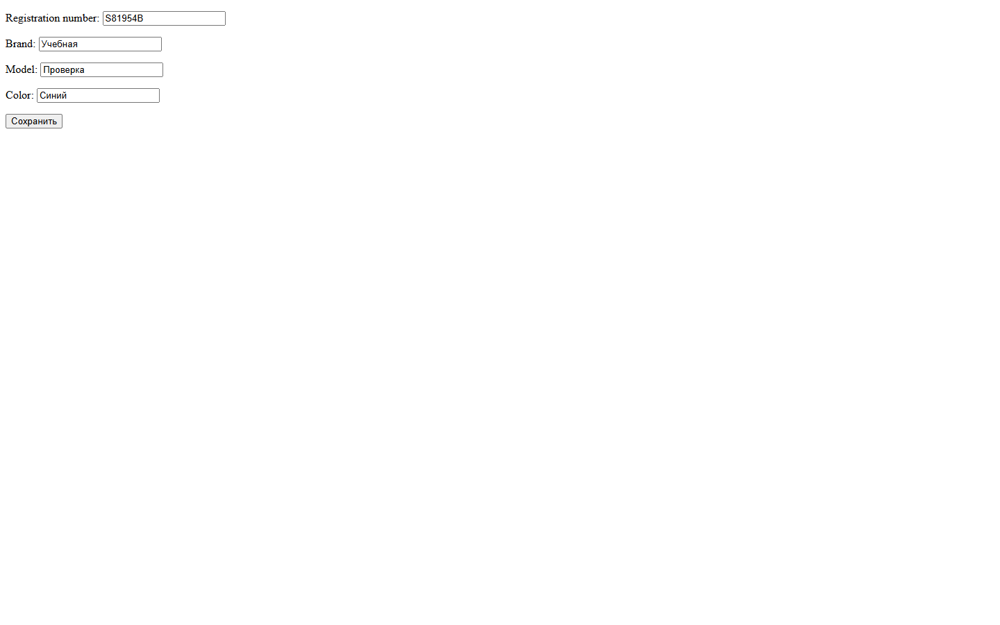
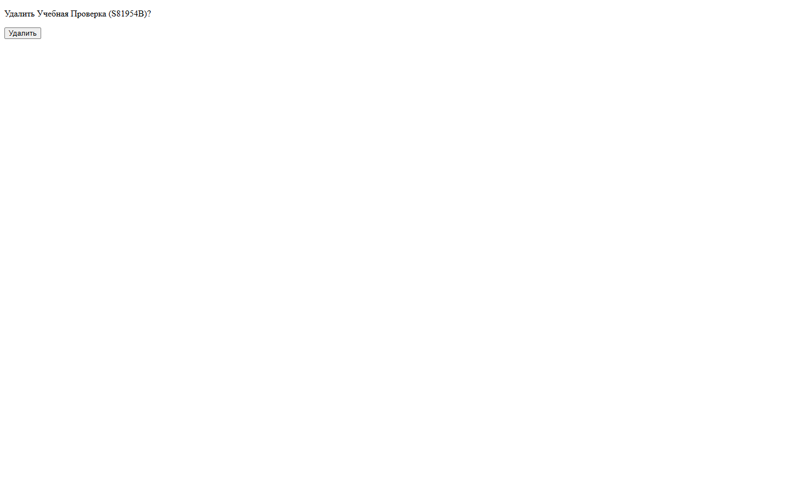
Формы добавления владельца и автомобиля:
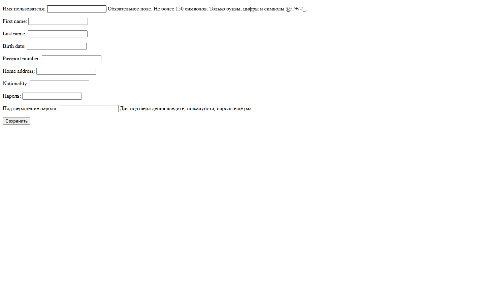
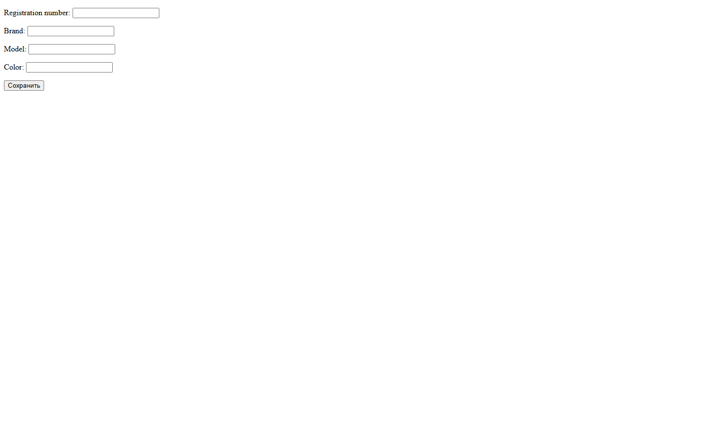
Практическое занятие 2.3
По заданию нужно сделать владельца автомобиля пользователем приложения и добавить ему номер паспорта, домашний адрес и национальность.
Сначала я расширил модель пользователя, затем добавил новые поля в форму и панель администратора.
Владелец уже создан как пользователь на основе AbstractUser. Это было сделано до применения первой миграции, чтобы затем не менять модель пользователя в работающей базе. К владельцу добавлены номер паспорта, адрес и национальность. Они отображаются в Admin и доступны в форме создания.
В форме создания владельца видны дополнительные поля пользователя:
Страницы списка и отдельного владельца показывают данные пользователя. После этого я перешел к сайту автогонок.
Лабораторная часть. Табло победителей автогонок
Постановка задачи
Для варианта 6 требуется сайт автогонок. Пользователь должен иметь возможность зарегистрироваться, заполнить данные гонщика, выбрать гонку и управлять своей регистрацией. На странице гонки нужны заезды и результаты, а также комментарии с оценкой. Администратор указывает результаты через Django Admin и может управлять гонками через сайт.
Для сайта я создал проект students/k3340/laboratory_works/Shitarev_Andrey/laboratory_work_2. В нем находятся manage.py, папка настроек django_project_shitarev и приложение project_first_app. База этого проекта называется web_racing_shitarev.
Настройки и шаблонизация
Сначала я настроил PostgreSQL и два движка шаблонов. Встроенный Admin работает на стандартных шаблонах Django, а собственные страницы - через Jinja2. Для сайта автогонок я использовал стандартного пользователя Django: паспортные данные здесь не нужны.
Модель данных
На схеме показаны пользователь, гонщик, гонка, регистрация, заезд и комментарий. Линии между ними показывают связи записей:
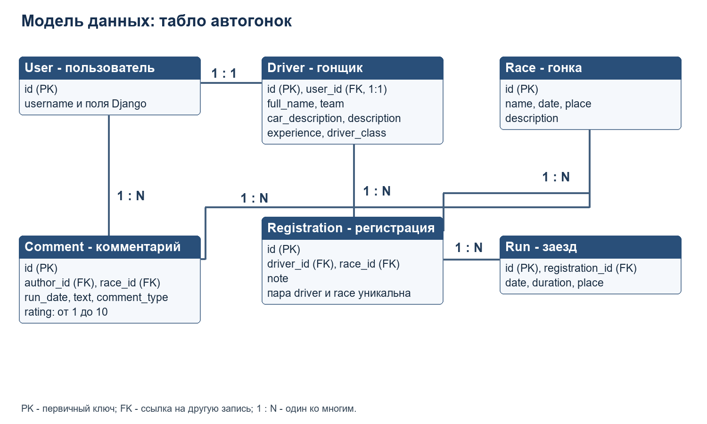
Связь 1 : 1 означает, что одному пользователю соответствует один профиль гонщика. Связь 1 : N означает, что с одной записью может быть связано несколько других записей. Например, одной регистрации может соответствовать несколько заездов.
Сначала я определил, какие данные нужны сайту. Затем создал в models.py пять моделей. Driver содержит данные участника и связан с пользователем. Race хранит гонку. Registration связывает гонщика и гонку. Run хранит отдельный заезд и его результат. Comment содержит отзыв.
Полный код моделей:
Сначала я подключил необходимые части Django и модели:
from django.conf import settings
from django.core.validators import MinValueValidator, MaxValueValidator
from django.db import models
Модель Driver хранит сведения об участнике и связана с пользователем.
class Driver(models.Model):
user = models.OneToOneField(settings.AUTH_USER_MODEL, on_delete=models.CASCADE)
full_name = models.CharField(max_length=150)
team = models.CharField(max_length=100)
car_description = models.TextField()
description = models.TextField()
experience = models.CharField(max_length=100)
driver_class = models.CharField(max_length=100)
def __str__(self):
return self.full_name
Модель Race хранит сведения о гонке.
class Race(models.Model):
name = models.CharField(max_length=150)
date = models.DateField()
place = models.CharField(max_length=150)
description = models.TextField(blank=True)
def __str__(self):
return self.name
Модель Registration связывает гонщика с гонкой.
class Registration(models.Model):
driver = models.ForeignKey(Driver, on_delete=models.CASCADE)
race = models.ForeignKey(Race, on_delete=models.CASCADE)
note = models.CharField(max_length=200, blank=True)
class Meta:
constraints = [models.UniqueConstraint(fields=['driver', 'race'], name='unique_driver_race')]
def __str__(self):
return f'{self.driver} - {self.race}'
Модель Run хранит отдельный заезд и его результат.
class Run(models.Model):
registration = models.ForeignKey(Registration, on_delete=models.CASCADE, related_name='runs')
date = models.DateField()
duration = models.DurationField()
place = models.PositiveIntegerField(validators=[MinValueValidator(1)])
Модель Comment хранит комментарий и оценку.
class Comment(models.Model):
TYPES = [('cooperation', 'Вопрос о сотрудничестве'), ('racing', 'Вопрос о гонках'), ('other', 'Иное')]
author = models.ForeignKey(settings.AUTH_USER_MODEL, on_delete=models.CASCADE)
race = models.ForeignKey(Race, on_delete=models.CASCADE, related_name='comments')
run_date = models.DateField()
text = models.TextField()
comment_type = models.CharField(max_length=20, choices=TYPES)
rating = models.PositiveSmallIntegerField(validators=[MinValueValidator(1), MaxValueValidator(10)])
У профиля гонщика связь с пользователем один к одному: один пользователь управляет своим профилем. В регистрации есть ограничение unique_driver_race, поэтому дважды зарегистрировать одного гонщика на одну гонку нельзя. При этом у одной регистрации может быть несколько записей Run. Это удобно: регистрация остается одной, а заезды можно учитывать отдельно.
В комментарии заданы три типа и проверка рейтинга от 1 до 10. В заезде сохраняются дата, время прохождения и место. После описания моделей создана и применена миграция к отдельной базе PostgreSQL.
Состояние миграций проекта автогонок:
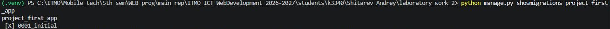
Таблицы моделей в базе автогонок:
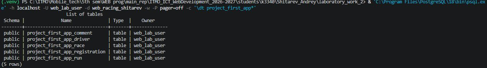
Django Admin
Сначала я зарегистрировал все пять моделей в admin.py. Затем открыл панель администратора. В ней можно посмотреть регистрации и комментарии, добавить заезды, указать время и место.
Так выглядит панель управления гонками и результатами:
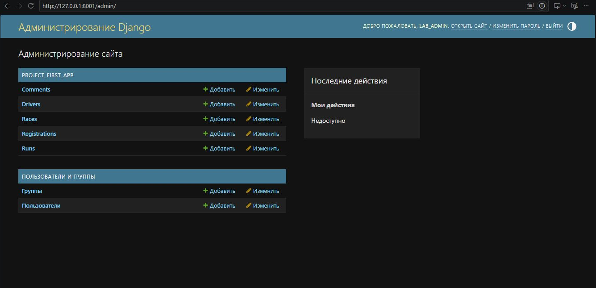
В форме изменения заезда указаны регистрация участника, дата, время и занятое место:
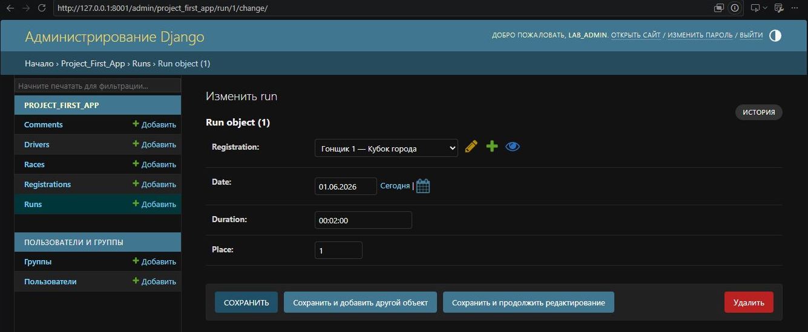
Формы
Затем я создал в forms.py формы для регистрации, профиля, гонки, регистрации на гонку и комментария:
Сначала я подключил необходимые части Django и модели:
from django import forms
from django.contrib.auth.forms import UserCreationForm
from django.contrib.auth.models import User
from .models import Driver, Race, Registration, Comment
Форма SignupForm нужна для регистрации пользователя. Она содержит имя пользователя и поля для пароля.
class SignupForm(UserCreationForm):
class Meta:
model = User
fields = ('username',)
Форма DriverForm нужна для ввода данных гонщика, команды и автомобиля.
class DriverForm(forms.ModelForm):
class Meta:
model = Driver
exclude = ('user',)
Форма RaceForm нужна для ввода и изменения сведений о гонке.
class RaceForm(forms.ModelForm):
class Meta:
model = Race
fields = ('name', 'date', 'place', 'description')
Форма RegistrationForm позволяет указать примечание к регистрации на гонку.
class RegistrationForm(forms.ModelForm):
class Meta:
model = Registration
fields = ('note',)
Форма CommentForm содержит поля комментария, его типа, даты заезда и оценки.
class CommentForm(forms.ModelForm):
class Meta:
model = Comment
fields = ('run_date', 'text', 'comment_type', 'rating')
В Meta перечислены поля, доступные пользователю. Например, форма регистрации на гонку позволяет изменить примечание, но не позволяет выбрать другого владельца записи. Пользователь и гонка устанавливаются сервером.
Представления и проверка прав
В views.py я добавил обработку запросов. Для действий с аккаунтом указал login_required, чтобы пользователь сначала вошел на сайт. При изменении и удалении регистрации добавил проверку ее владельца. Для управления гонками добавил проверку is_staff.
Ниже приведен код представлений:
Сначала я подключил необходимые части Django и модели:
from django.contrib.auth import authenticate, login, logout
from django.contrib.auth.decorators import login_required, user_passes_test
from django.core.paginator import Paginator
from django.db import IntegrityError, transaction
from django.db.models import Q
from django.http import HttpResponseBadRequest
from django.shortcuts import get_object_or_404, redirect, render
from django.views.decorators.http import require_POST
from .forms import SignupForm, DriverForm, RaceForm, RegistrationForm, CommentForm
from .models import Driver, Race, Registration, Run
Функция page передает данные в шаблон и возвращает готовую страницу браузеру.
def page(request, name, context=None, status=200):
return render(request, name, context or {}, using='jinja2', status=status)
Функция show_form показывает страницу с переданной формой и ее заголовком.
def show_form(request, form, title, status=200):
return page(request, 'form.html', {'form': form, 'title': title}, status)
Эта функция создает учетную запись пользователя.
def signup(request):
form = SignupForm(request.POST or None)
if request.method == 'POST' and form.is_valid():
login(request, form.save())
return redirect('race_list')
return show_form(request, form, 'Регистрация', 400 if request.method == 'POST' else 200)
Эта функция выполняет вход пользователя.
def sign_in(request):
error = ''
if request.method == 'POST':
user = authenticate(request, username=request.POST.get('username'), password=request.POST.get('password'))
if user is not None:
login(request, user)
return redirect('race_list')
error = 'Неверное имя пользователя или пароль'
return page(request, 'login.html', {'error': error}, 400 if error else 200)
Эта функция завершает сеанс пользователя.
@login_required
@require_POST
def sign_out(request):
logout(request)
return redirect('race_list')
Эта функция получает гонки из базы, применяет поиск и делит список на страницы.
def race_list(request):
query = request.GET.get('q', '').strip()
place = request.GET.get('place', '').strip()
races = Race.objects.order_by('date', 'id')
if query:
races = races.filter(Q(name__icontains=query) | Q(description__icontains=query))
if place:
races = races.filter(place__icontains=place)
pages = Paginator(races, 3)
return page(request, 'race_list.html', {'races': pages.get_page(request.GET.get('page')), 'query': query, 'place': place})
Эта функция собирает данные выбранной гонки, заезды и комментарии для страницы.
def race_detail(request, race_id):
race = get_object_or_404(Race, pk=race_id)
runs = Run.objects.filter(registration__race=race).select_related('registration__driver').order_by('place', 'id')
registered = request.user.is_authenticated and Registration.objects.filter(driver__user=request.user, race=race).exists()
return page(request, 'race_detail.html', {'race': race, 'runs': runs, 'comments': race.comments.select_related('author'), 'comment_form': CommentForm(), 'registered': registered})
Эта функция показывает и сохраняет профиль текущего пользователя.
@login_required
def driver_profile(request):
driver = Driver.objects.filter(user=request.user).first()
form = DriverForm(request.POST or None, instance=driver)
if request.method == 'POST' and form.is_valid():
driver = form.save(commit=False)
driver.user = request.user
driver.save()
return redirect('race_list')
return show_form(request, form, 'Профиль гонщика', 400 if request.method == 'POST' else 200)
Эта функция регистрирует текущего гонщика и проверяет повторную запись.
@login_required
def registration_create(request, race_id):
race = get_object_or_404(Race, pk=race_id)
driver = Driver.objects.filter(user=request.user).first()
if not driver:
return redirect('profile')
if Registration.objects.filter(driver=driver, race=race).exists():
return HttpResponseBadRequest('Вы уже зарегистрированы на гонку')
form = RegistrationForm(request.POST or None)
if request.method == 'POST' and form.is_valid():
registration = form.save(commit=False)
registration.driver, registration.race = driver, race
try:
with transaction.atomic():
registration.save()
except IntegrityError:
return HttpResponseBadRequest('Вы уже зарегистрированы на гонку')
return redirect('race_detail', race_id=race.pk)
return show_form(request, form, 'Регистрация на гонку', 400 if request.method == 'POST' else 200)
Эта функция выбирает регистрации текущего пользователя.
@login_required
def my_registrations(request):
registrations = Registration.objects.filter(driver__user=request.user).select_related('race')
return page(request, 'registrations.html', {'registrations': registrations})
Эта функция позволяет изменить свою регистрацию.
@login_required
def registration_edit(request, pk):
registration = get_object_or_404(Registration, pk=pk, driver__user=request.user)
form = RegistrationForm(request.POST or None, instance=registration)
if request.method == 'POST' and form.is_valid():
form.save()
return redirect('my_registrations')
return show_form(request, form, 'Изменение регистрации', 400 if request.method == 'POST' else 200)
Эта функция удаляет свою регистрацию после отправки формы.
@login_required
@require_POST
def registration_delete(request, pk):
registration = get_object_or_404(Registration, pk=pk, driver__user=request.user)
registration.delete()
return redirect('my_registrations')
Эта функция сохраняет комментарий и связывает его с автором и гонкой.
@login_required
@require_POST
def comment_create(request, race_id):
race = get_object_or_404(Race, pk=race_id)
form = CommentForm(request.POST)
if form.is_valid():
comment = form.save(commit=False)
comment.race, comment.author = race, request.user
comment.save()
return redirect('race_detail', race_id=race.pk)
return show_form(request, form, 'Комментарий', 400)
Эта функция показывает форму и сохраняет гонку, если пользователь имеет права администратора.
@user_passes_test(lambda user: user.is_staff)
def race_edit(request, race_id=None):
race = get_object_or_404(Race, pk=race_id) if race_id else None
form = RaceForm(request.POST or None, instance=race)
if request.method == 'POST' and form.is_valid():
race = form.save()
return redirect('race_detail', race_id=race.pk)
return show_form(request, form, 'Гонка', 400 if request.method == 'POST' else 200)
Эта функция удаляет гонку после проверки прав администратора.
@user_passes_test(lambda user: user.is_staff)
@require_POST
def race_delete(request, race_id):
race = get_object_or_404(Race, pk=race_id)
race.delete()
return redirect('race_list')
Функция race_list получает поисковую строку и место из адреса, затем фильтрует записи и делит их на страницы. В registration_create сервер сам подставляет текущего гонщика и проверяет, нет ли уже регистрации. Ограничение в базе остается дополнительной защитой. comment_create сохраняет автора из текущего сеанса; участвовать в гонке для комментария не требуется.
После этого я связал адреса с функциями в urls.py. Ниже список маршрутов:
from django.urls import path
from . import views
urlpatterns = [
path('', views.race_list, name='race_list'),
path('signup/', views.signup, name='signup'),
path('login/', views.sign_in, name='login'),
path('logout/', views.sign_out, name='logout'),
path('profile/', views.driver_profile, name='profile'),
path('registrations/', views.my_registrations, name='my_registrations'),
path('races/new/', views.race_edit, name='race_create'),
path('races/<int:race_id>/', views.race_detail, name='race_detail'),
path('races/<int:race_id>/edit/', views.race_edit, name='race_edit'),
path('races/<int:race_id>/delete/', views.race_delete, name='race_delete'),
path('races/<int:race_id>/register/', views.registration_create, name='registration_create'),
path('races/<int:race_id>/comment/', views.comment_create, name='comment_create'),
path('registrations/<int:pk>/edit/', views.registration_edit, name='registration_edit'),
path('registrations/<int:pk>/delete/', views.registration_delete, name='registration_delete'),
]
Страницы и оформление
Затем я создал HTML-файлы в project_first_app/jinja2/. В base.html добавил общую навигацию. В race_list.html разместил список гонок, поиск и ссылки страниц. В race_detail.html добавил информацию о гонке, таблицу заездов и комментарии. form.html используется для нескольких форм, login.html - для входа, registrations.html - для собственных регистраций.
Например, общий шаблон выглядит так:
В общей странице подключается файл оформления:
<link rel="stylesheet" href="/static/project_first_app/style.css">
В форме выхода передается CSRF-токен. Это нужно для защиты действий, которые изменяют состояние на сервере. Кнопки администратора показываются только сотруднику, но дополнительно право проверяется и в представлениях.
Администратору доступны ссылки для добавления и изменения гонки и кнопка удаления:
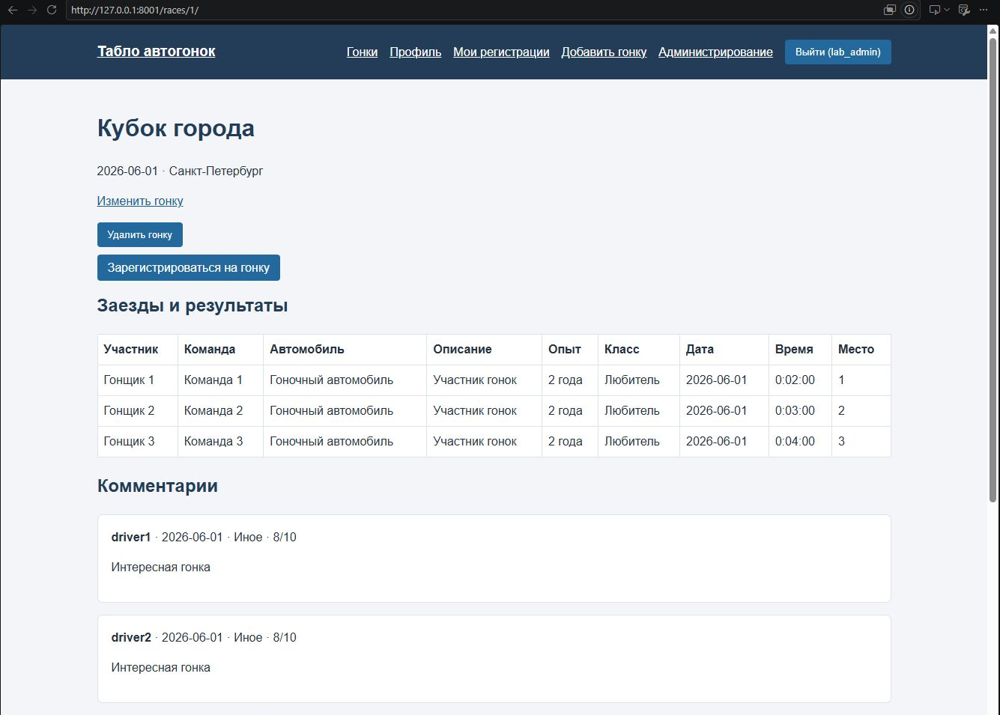
Форма изменения гонки:
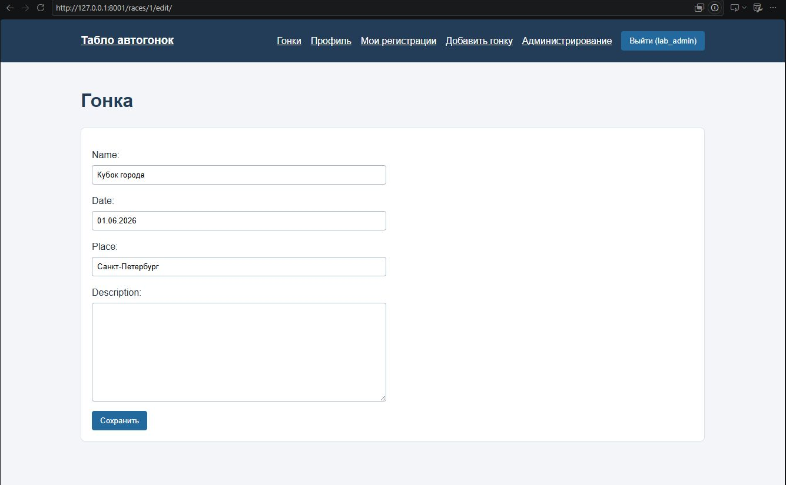
Для оформления я создал файл static/project_first_app/style.css. В нем задал цвета, размеры, карточки, формы и таблицу с горизонтальной прокруткой на узком экране.
Так выглядит список гонок с поиском и фильтром:
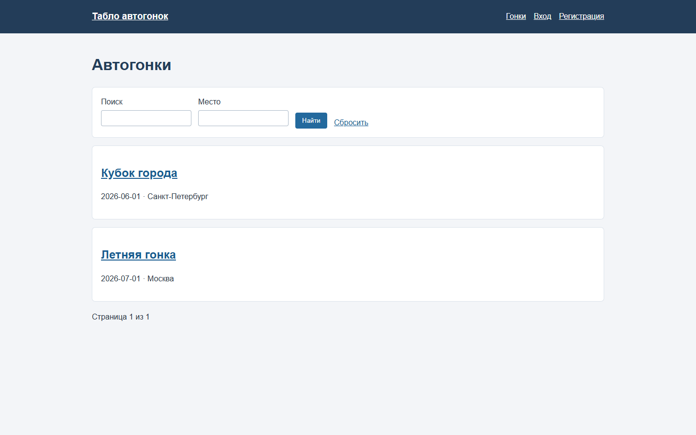
Страницы регистрации и входа:
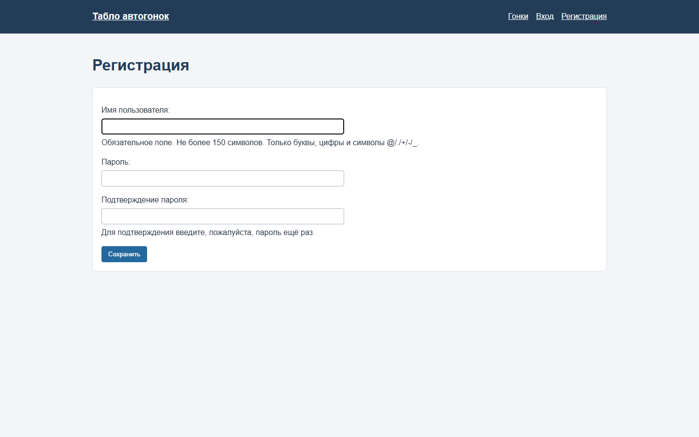
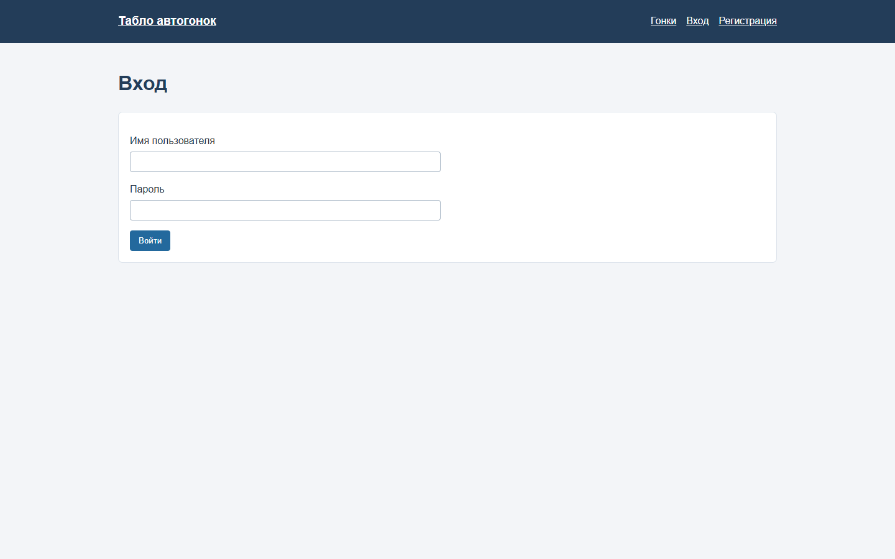
После входа пользователь заполняет свой профиль гонщика:
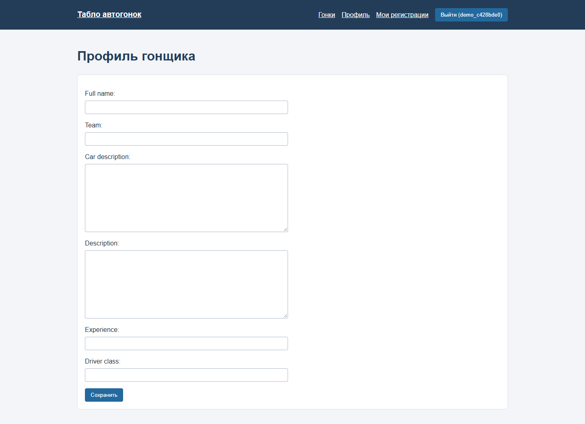
После заполнения профиля можно зарегистрироваться на гонку и указать примечание:
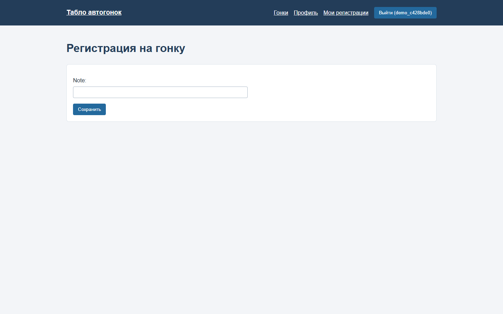
Созданная запись появляется на странице собственных регистраций:
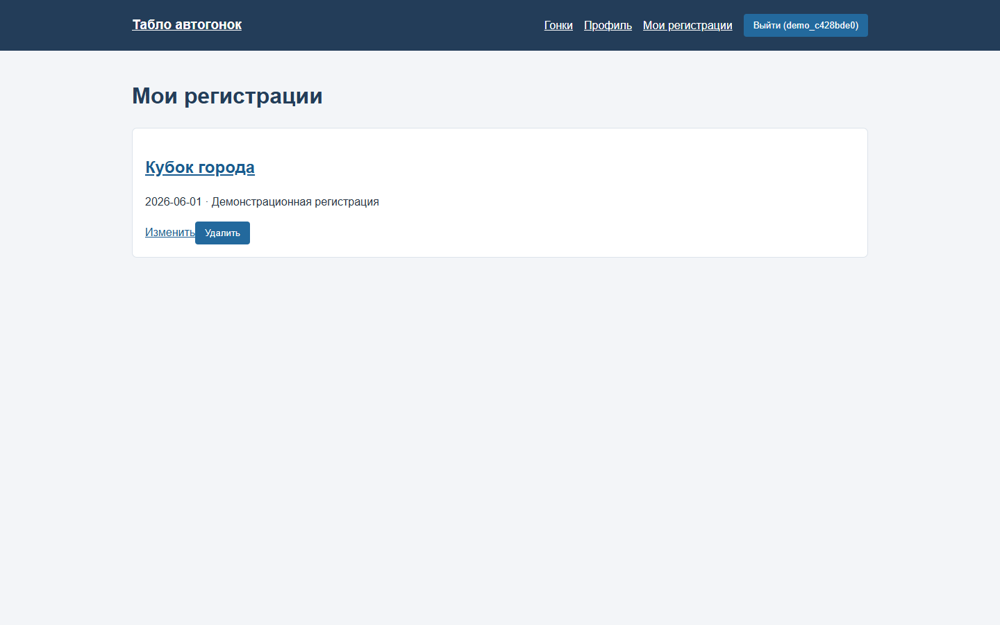
Авторизованный пользователь также видит форму комментария:
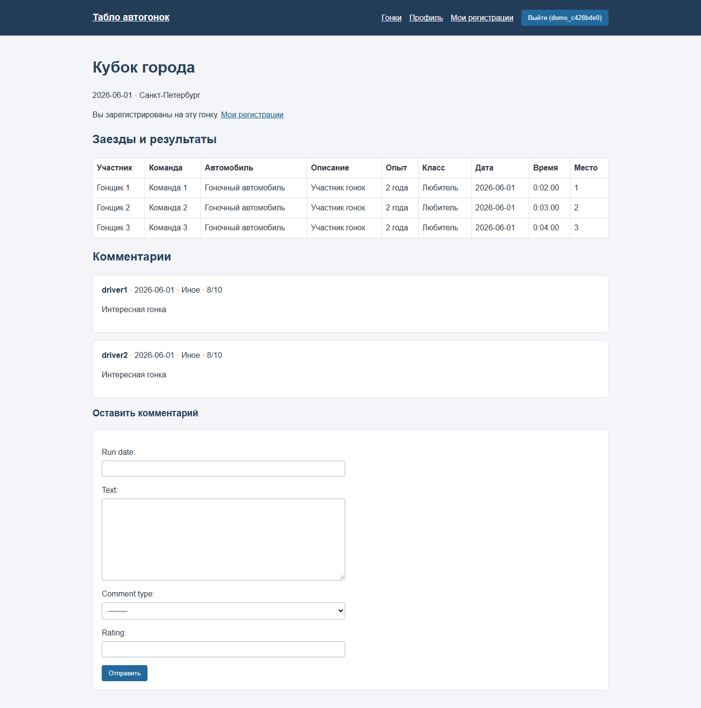
Затем я проверил поиск по названию и фильтр по месту проведения:
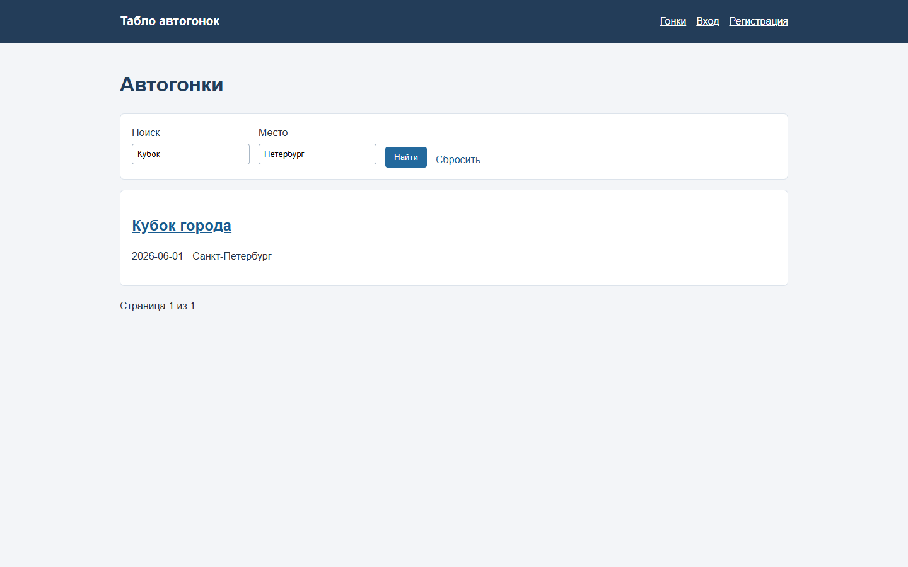
Для проверки перехода между страницами я добавил дополнительные гонки и открыл вторую страницу:
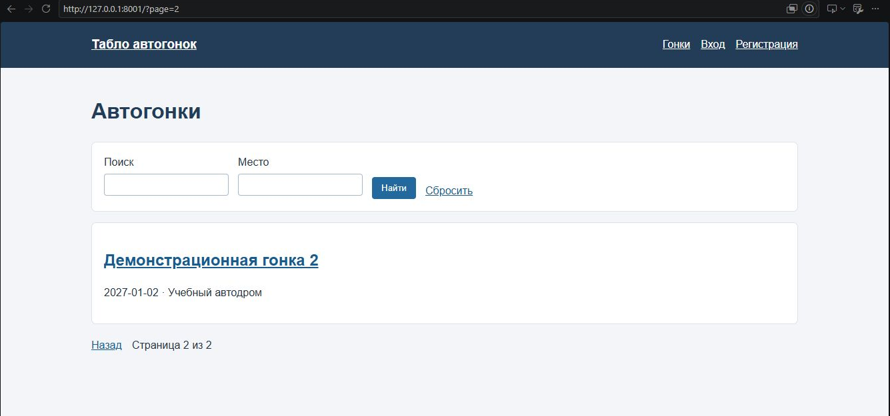
Подробно о странице гонки
Далее я сделал страницу конкретной гонки в race_detail.html. Сначала вывел название, место и дату. Затем добавил таблицу заездов с данными гонщиков. Если заездов нет, вместо них показывается сообщение. Ниже разместил комментарии и форму для пользователя, который вошел на сайт.
Код страницы:
В этом фрагменте шаблон перебирает комментарии и выводит текст каждого из них:
<h2>Комментарии</h2>{% for comment in comments %}<article class="card"><b>{{ comment.author.username }}</b> · {{ comment.run_date }} · {{ comment.get_comment_type_display() }} · {{ comment.rating }}/10<p>{{ comment.text }}</p></article>{% else %}<p>Комментариев пока нет.</p>{% endfor %}
В цикле for Jinja2 последовательно берет записи, переданные представлением. Условие if позволяет показать ссылки в зависимости от состояния входа и прав. Сами права все равно проверяются на сервере: скрытие ссылки лишь делает интерфейс понятнее.
Для поиска и фильтра я использовал метод GET. Выбранные значения попадают в адрес страницы. При переходе вперед или назад они сохраняются, поэтому фильтр не сбрасывается. Вот шаблон списка:
Форма поиска отправляет введенные значения в адрес страницы:
<form method="get" class="card filters"><label>Поиск <input name="q" value="{{ query }}"></label><label>Место <input name="place" value="{{ place }}"></label><button>Найти</button><a href="/">Сбросить</a></form>
В form.html форма используется повторно для профиля, регистрации, гонки и других действий. Django формирует HTML полей через form.as_p(). На странице login.html отдельно расположены поля имени и пароля. В registrations.html перечисляются только регистрации, которые представление отобрало для текущего пользователя. Удаление отправляется методом POST и требует подтверждения в браузере.
На странице гонки показаны заезды, результаты и комментарии:
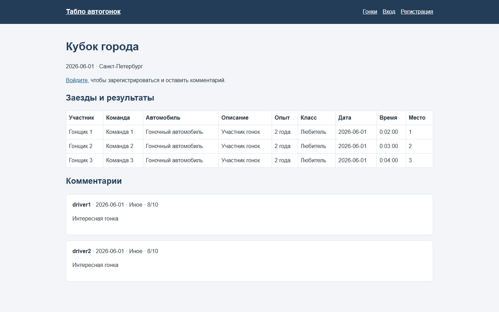
Файлы проекта и порядок запуска
В корне каждого проекта manage.py запускает команды Django. В папке настроек settings.py описывает подключение и приложения, а urls.py включает маршруты. Файлы __init__.py обозначают пакеты Python. Файлы в migrations/ нужны для повторного создания схемы на другой базе.
В практическом приложении дополнительно находятся шаблоны owner.html, owners.html, cars.html, car.html, form.html и car_delete.html. Их названия соответствуют отображаемым данным или действию. Команды practice_data.py и demo_data.py размещены в management/commands/, чтобы запускать их стандартной командой manage.py.
Для запуска практики из ее каталога используем python manage.py runserver. Для гонок можно открыть второй терминал и использовать python manage.py runserver 8001. Окружение Python нужно активировать заранее.
Данные
Команда python manage.py demo_data добавляет две гонки, трех гонщиков, регистрации, результаты и комментарии. Для создания собственной учетной записи можно использовать форму сайта.
Вывод
В этой работе я познакомился с устройством Django-проекта, моделями, миграциями, формами и представлениями. В практической части были созданы владельцы и автомобили, а связь владения позволила хранить периоды между ними. Затем отдельный проект использовал PostgreSQL для данных гонок: пользователь связан с профилем гонщика, регистрация - с гонкой, а каждый заезд - с регистрацией.
Django получает запрос, обращается к моделям и передает данные шаблону Jinja2. Шаблон формирует страницу, которую видит пользователь. Admin позволяет управлять записями и результатами, а проверки прав в представлениях ограничивают изменение чужих регистраций.